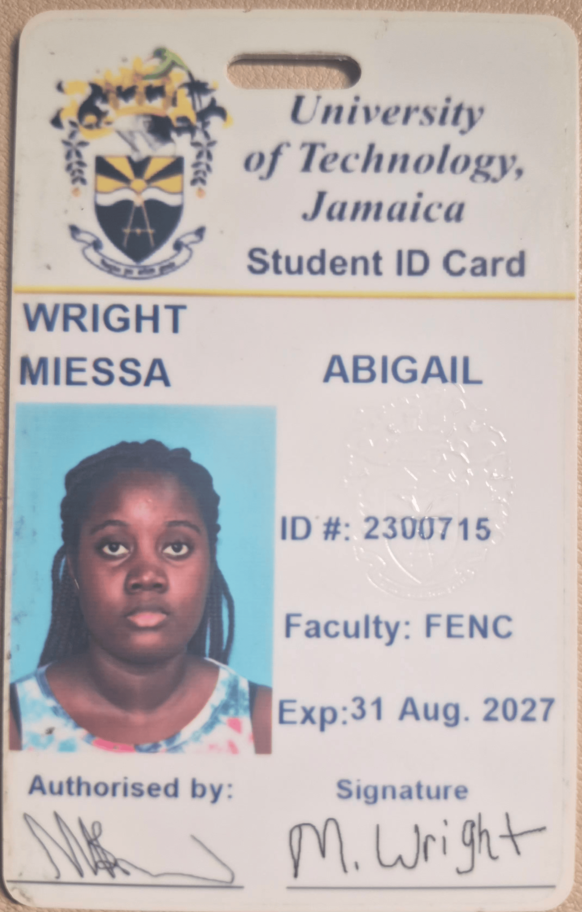

Welcome to My Portfolio
Welcome to my personal portfolio website. My name is Miessa Wright, and I am a student at the University of Technology, Jamaica studying Computer Networking and Security.
This website gives an overview of my academic journey, personality, professional goals, personal development, interests and projects.

About Me
I am a university student who is interested in technology, mainly cybersecurity . I enjoy learning how technology works and developing skills that can be applied to real-world problems.
My goal is to continue developing my technical knowledge so that one day I can create something innovayive with skills I have learnt.
My Areas of Interest
Cybersecurity
As cyber threats grow every day, there is a massive, high-paying job market for people who know how to defend networks.
Gaming
Gaming is one of my favourite ways to relax in my free time. I especially enjoy playing The Sims 4 and creating different stories and characters.
Technology
Technology interests me because it continues to change and creates new opportunities for learning and innovation.
My Goal
My long-term goal is to build a successful career in the technology industry and become a knowledgeable and proficient in cybersecurity.